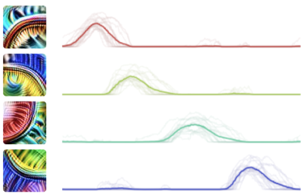
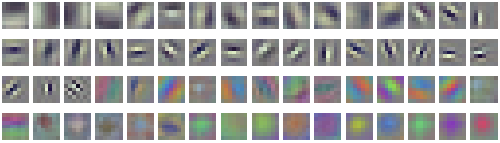

本文是 线程：电路 的一部分，该系列以实验性形式收集受邀的短文和批判性评论，深入探讨神经网络的内部工作机制。
曲线检测器
高低频检测器
卷积神经网络在其内部蕴藏着一个隐藏的对称性世界。这种对称性是理解神经网络内部特征和电路的强大工具。它还表明，设计时就将额外对称性融入神经网络的努力（例如 [[bergstra2011statistical,cohen2016group,dieleman2016exploiting,cohen2016steerable,thomas2018tensor,winkels20183d]]）可能走在了前景广阔的道路上。
要看到这些对称性，我们需要观察卷积神经网络内部的单个神经元以及连接它们的 深入观察：电路导论。结果发现，许多神经元是同一基本特征经过轻微变换后的版本。这包括同一特征的旋转副本、缩放副本、翻转副本、检测不同颜色的特征，以及更多其他形式。我们有时将这种现象称为“equivariance”（等变性），因为这意味着切换这些神经元等价于对输入进行变换。 [1]
等变性可以视为一种“”，即电路中抽象的重复模式，类似于系统生物学中的基序 [[alon2019introduction]]。它也可以视为一种更大规模的“结构现象”（类似于 权重带状结构 和 ），因为某一类等变性通常在某些层中广泛存在，而在其他层中则较为罕见。深入观察：电路导论分支特化
在本文中，我们将重点关注在 ImageNet [[deng2009imagenet]] 上训练的 InceptionV1 [[szegedy2015going]] 中的等变性示例，但我们在研究过的所有自然图像训练模型中都至少观察到一定程度的等变性。
等变特征
旋转等变性：等变性的一个例子是同一特征的不同旋转版本。这在 InceptionV1早期视觉概览 中尤为常见，例如 曲线检测器、InceptionV1早期视觉概览 和 InceptionV1早期视觉概览。
[交互图——查看原文：https://distill.pub/2020/circuits/equivariance]
要验证这些确实是同一特征的旋转版本，可以取能激活其中一个神经元的样本，对其进行旋转，然后检查其他神经元是否按预期激活。关于曲线检测器的 曲线检测器 通过多项实验测试了它们的等变性，包括旋转激活某个神经元的刺激并观察其他神经元的反应。

验证曲线检测器这类单元确实是同一特征旋转版本的方法之一，是取激活其中一个单元的刺激，然后在旋转刺激的过程中观察它们的激活情况。
了解更多。
尺度等变性：旋转版本并不是我们看到的唯一变体。同一特征在不同尺度上出现也相当常见，尽管缩放后的特征通常出现在不同层中。例如，我们看到 InceptionV1早期视觉概览 跨越了巨大的尺度范围，小尺度版本出现在早期层，大尺度版本出现在后期层。
[交互图——查看原文：https://distill.pub/2020/circuits/equivariance]
色调等变性：对于颜色检测特征，我们经常看到检测同一事物但色调不同的变体。例如，InceptionV1早期视觉概览 单元会在中心检测一种色调，并在周围检测互补色调。在 InceptionV1 中，直到第七层甚至第八层都能找到这样的单元。
[交互图——查看原文：https://distill.pub/2020/circuits/equivariance]
色调-旋转等变性：在早期视觉中，我们经常看到 InceptionV1早期视觉概览。这些单元在一侧检测一种色调，在另一侧检测互补色调。因此，它们同时在色调和旋转上存在变异。这些变异特别有趣，因为色调和旋转之间存在相互作用。但将色调循环 180 度会翻转两侧的色调，因此等价于旋转 180 度。
在下图中，我们展示方向旋转完整 360 度，而色调仅旋转 180 度。在图表底部，它会环绕回顶部但偏移 180 度。
[交互图——查看原文：https://distill.pub/2020/circuits/equivariance]
反射等变性：当我们进入网络的中层时，旋转变体变得不那么突出，但水平翻转对变得相当普遍。
[交互图——查看原文：https://distill.pub/2020/circuits/equivariance]
其他等变性：最后，我们看到以其他各种方式变换的特征变体。例如，同一狗头特征的短鼻子与长鼻子版本，或同一特征的人类与狗版本。我们甚至看到对相机视角具有等变性的单元（在 Places365 [[zhou2016places]] 模型中发现）。这些不一定是经典意义上认为的等变性形式，但本质上似乎是同一回事。
[交互图——查看原文：https://distill.pub/2020/circuits/equivariance]
等变电路
我们在神经元中观察到的等变行为，实际上反映了神经网络权重及其形成的 深入观察：电路导论 中更深层的对称性。
我们将首先关注由旋转不变特征构成的旋转等变特征。这种“不变→等变”情况可能是等变电路最简单的形式。接下来，我们将考察“等变→不变”电路，最后是更复杂的“等变→等变”电路。
高低频电路：在以下示例中，我们看到 InceptionV1早期视觉概览 是由一个高频因子和一个低频因子构建而成（两个因子都对应于前一层中多个神经元的组合）。每个高低频检测器对给定方向上的频率转变做出响应，在一侧检测高频模式，在另一侧检测低频模式。请注意相同的权重模式如何旋转，从而产生特征的旋转版本。
[交互图——查看原文：https://distill.pub/2020/circuits/equivariance]
对比→中心电路：这种相同模式可以反向使用，将旋转等变特征变回旋转不变特征（“等变→不变”电路）。在以下示例中，我们看到多个绿色-紫色 InceptionV1早期视觉概览 被组合起来，创建出绿色-紫色和紫色-绿色的 InceptionV1早期视觉概览。 将此电路中的权重与前一个电路中的权重进行比较。它实际上是相同权重模式的转置。
[交互图——查看原文：https://distill.pub/2020/circuits/equivariance]
有时我们会看到其中一个紧接着另一个：等变性先被创建，然后立即部分用于创建不变单元。
黑白-彩色电路：在以下示例中，一个通用彩色因子和一个黑白因子被用来创建黑白与彩色特征。随后，这些 InceptionV1早期视觉概览 被组合起来，创建出在中心检测黑白而在周围检测彩色（或反之）的单元。
[交互图——查看原文：https://distill.pub/2020/circuits/equivariance]
线条→圆/发散电路：等变特征被组合以创建不变特征的另一个例子是，早期类似线条的 InceptionV1早期视觉概览 被组合起来，创建出小圆单元和发散线条单元。
[交互图——查看原文：https://distill.pub/2020/circuits/equivariance]
曲线→圆/渐屈线电路：关于旋转等变性被组合以创建不变单元的更复杂例子，我们可以看看 曲线检测器 如何被组合来创建 InceptionV1早期视觉概览 和 InceptionV1早期视觉概览。这个电路也是尺度等变性的例子。将小尺度曲线检测器变成小圆检测器的通用模式，也将把大尺度曲线检测器变成大圆检测器。将中尺度曲线检测器变成中尺度渐屈线检测器的模式，也将把大曲线变成大渐屈线检测器。
[交互图——查看原文：https://distill.pub/2020/circuits/equivariance]
人类-动物电路：到目前为止，我们看到的所有电路例子都涉及旋转。而这些人类-动物和动物-人类检测器则是水平翻转等变性的例子：
[交互图——查看原文：https://distill.pub/2020/circuits/equivariance]
不变狗头电路：相反，这个例子（属于更广泛的 深入观察：电路导论 的一部分）展示了左右朝向的狗头被组合成一个姿态不变的狗头检测器。请注意权重是如何翻转的。
[交互图——查看原文：https://distill.pub/2020/circuits/equivariance]
“等变→等变”电路
到目前为止我们所考察的电路要么是“不变→等变”，要么是“等变→不变”。它们要么有不变的输入单元，要么有不变的输出单元。这种形式的电路相当简单：权重会旋转、翻转或以其他方式变换，但仅针对单个特征的变换做出反应。当我们考察“等变→等变”电路时，情况会变得更加复杂。输入和输出特征都会发生变换，我们需要考虑两个单元之间的相对关系。
色调→色调电路：让我们从连接两组色调等变中心-周围检测器的电路开始。第二层中的每个单元都被前一层中选择相似色调的单元所激发。
[交互图——查看原文：https://distill.pub/2020/circuits/equivariance]
要理解上述内容，我们需要关注每个输入和输出神经元之间的相对关系——在本例中，即色轮上色调相差多远。当它们具有相同色调时，关系是兴奋性的。当它们具有接近但不同的色调时，关系是抑制性的。而当它们差异很大时，权重接近零。[2]
曲线→曲线电路：现在让我们考虑一个稍微更复杂的例子，即早期曲线检测器如何连接到晚期曲线检测器。我们将重点关注四个相互旋转 90 度的 曲线检测器。[3]
如果我们只看权重矩阵，会比较难理解。但如果我们关注每个曲线检测器如何连接到相同和相反方向的早期曲线，就更容易看出结构。每个曲线不再由前一层中相同的神经元构建，而是发生了偏移。每个曲线都被相同方向的曲线激发，并被相反方向的曲线抑制。同时，权重的空间结构也会旋转。
[交互图——查看原文：https://distill.pub/2020/circuits/equivariance]
对比→线条电路：作为一个更加复杂的例子，让我们看看 InceptionV1早期视觉概览 如何连接到 InceptionV1早期视觉概览。基本思想是，如果线条两侧存在不同颜色，线条检测器应该更强烈地激活。相反，如果颜色变化与线条垂直，则应该被抑制。
请注意，这相对于旋转是“等变→等变”电路，但相对于色调则是“等变→不变”电路。
[交互图——查看原文：https://distill.pub/2020/circuits/equivariance]
等变架构
等变性在深度学习中有着丰富的历史。许多重要的神经网络架构都以等变性为核心，并且有一个非常活跃的研究方向致力于更积极地融入等变性。但重点通常是设计等变架构，而不是我们迄今讨论的“自然等变性”。我们应该如何看待“自然”等变性与“设计”等变性之间的关系？正如我们将看到的，两者之间似乎存在着相当深刻的联系。
历史上，两者之间存在一些有趣的互动。研究人员经常观察到，神经网络第一层中的许多特征是同一基本模板的变换版本。[4] 这种第一层中自然出现的等变性，有时已经成为——在其他情况下也很容易成为——设计新架构的灵感来源。
例如，如果你在一个视觉任务上训练一个全连接神经网络，第一层会反复学习同一特征的各种变体：位于不同位置、方向和尺度的 Gabor 滤波器。卷积神经网络改变了这一点。通过将每个特征的平移副本直接嵌入网络架构中，它们通常消除了网络学习每个特征平移副本的需要。这带来了统计效率的大幅提升，并成为现代深度学习计算机视觉方法的基础。但如果我们观察一个训练良好的卷积神经网络的第一层，会发现同一特征的其他变换版本仍然存在：

受此启发，2011 年的一篇副标题为“One Gabor to Rule Them All”的论文 [[bergstra2011statistical]] 创建了一个稀疏编码模型，其中包含单个经过平移、旋转和缩放的 Gabor 滤波器。在最近几年，许多论文将这种等变性扩展到神经网络的隐藏层，以及更广泛的变换类型 [[cohen2016group,dieleman2016exploiting,cohen2016steerable,winkels20183d]]。正如卷积神经网络强制要求如果两个特征具有相同的相对位置，则它们之间的权重必须相同：
……这些更复杂的等变网络则使如果两个神经元在更一般的变换下具有相同的相对关系，则它们之间的权重相等：[6]
这至少近似于我们在观察等变电路时看到的卷积网络自然所做的事情！权重具有对称性，导致具有相似关系的神经元具有相似的权重，就像等变架构会强制它们这样做一样。
既然我们已经有了模仿所观察到的自然结构的神经网络架构，那么思考这类模型会学习什么样的特征和电路就很自然了。它们会学习我们自然形成的相同等变特征吗？还是会做完全不同的事情？为了回答这些问题，我们在 ImageNet 上训练了一个大致受 InceptionV1 启发的等变模型。我们让一半神经元具有旋转等变性 [[cohen2016group]]（共 16 个旋转），另一半则具有旋转不变性。由于我们没有花精力调优，该模型的测试准确率很差，但仍然学习到了有趣的特征。[7] 在 mixed3b 层中，我们发现等变模型学习到了 InceptionV1 中许多大型旋转等变族类的类似物，例如 曲线检测器、InceptionV1早期视觉概览、InceptionV1早期视觉概览 和 InceptionV1早期视觉概览：
[交互图——查看原文：https://distill.pub/2020/circuits/equivariance]
等变模型中类似特征的存在可以视为可解释性的一项成功预测。作为从事定性研究的研究人员，我们总是担心自己可能在自欺欺人。成功预测哪些特征会在等变神经网络架构中形成，实际上是一个相当非凡的预测，也是我们正确理解事物的良好验证。
另一个令人兴奋的可能性是，这种特征和电路分析也许能够为等变性研究提供信息。例如，自然形成的等变性类型可能有助于指导我们应该在神经网络不同层中设计哪些类型的等变性。
结论
等变性具有简化我们对神经网络理解的非凡能力。当我们将神经网络视为以结构化方式相互作用的特征族时，理解小的模板实际上就能转化为理解大量神经元如何相互作用。无论何时发现等变性，它都是巨大的帮助。
我们有时认为理解神经网络就像逆向工程一个普通的计算机程序。在这个类比中，等变性就像在代码中反复出现的同一个内联函数。一旦你意识到自己看到的是同一函数的多个副本，你就只需要理解它一次。
但自然等变性确实存在一些局限性。首先，我们必须找到等变族。这实际上可能需要我们花费大量工作，仔细研究大量神经元。此外，它们可能并不完全等变：某个单元的连接方式可能略有不同，或者存在小的例外，因此将其视为等变可能会在我们的理解中留下缺口。
我们对等变架构的潜力感到兴奋，它能让神经网络的特征和电路更容易被理解。这在早期视觉的背景下似乎特别有前景，因为绝大多数特征似乎都对旋转、色调、尺度或它们的组合具有等变性。
我们相对于神经科学家在研究人工神经网络而非生物神经网络视觉时的最大——也是讨论最少——优势之一是平移等变性。通过为每个特征只保留一个神经元而不是成千上万个平移副本，卷积神经网络大大降低了研究人工视觉系统相对于生物视觉系统的复杂性。这已成为我们能够系统性地理解 InceptionV1 的关键因素。
或许在未来，合适的等变架构将能够将理解神经网络早期视觉的复杂性再降低一个数量级。如果是这样，理解早期视觉可能会从“通过努力可能实现”转变为“容易实现”。
本文是 Circuits 系列的一部分，该系列是由一个开放的科学合作组织撰写的短文和评论集合，旨在深入探究神经网络的内部工作机制。
曲线检测器
高低频检测器